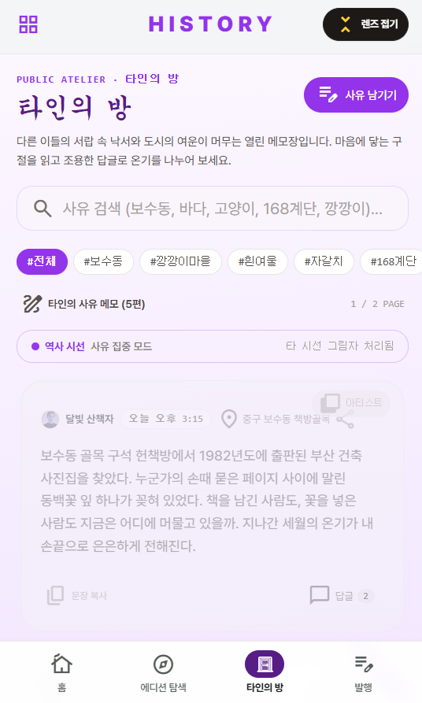
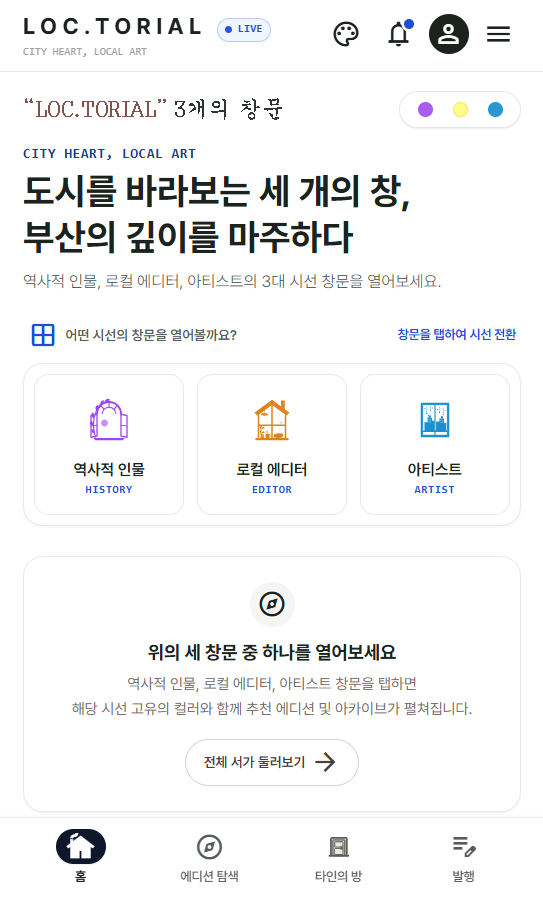
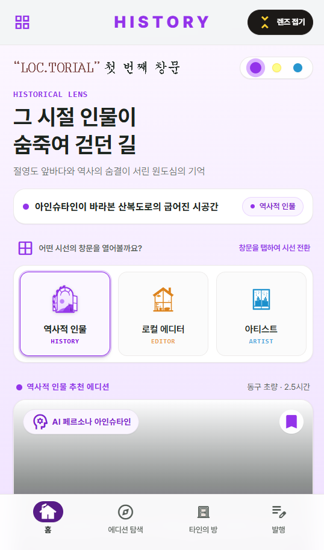
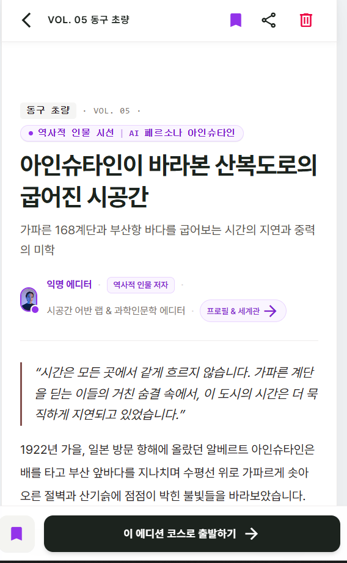
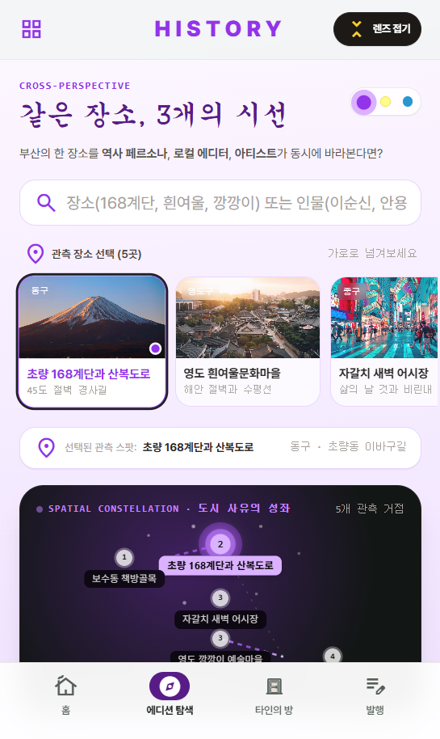
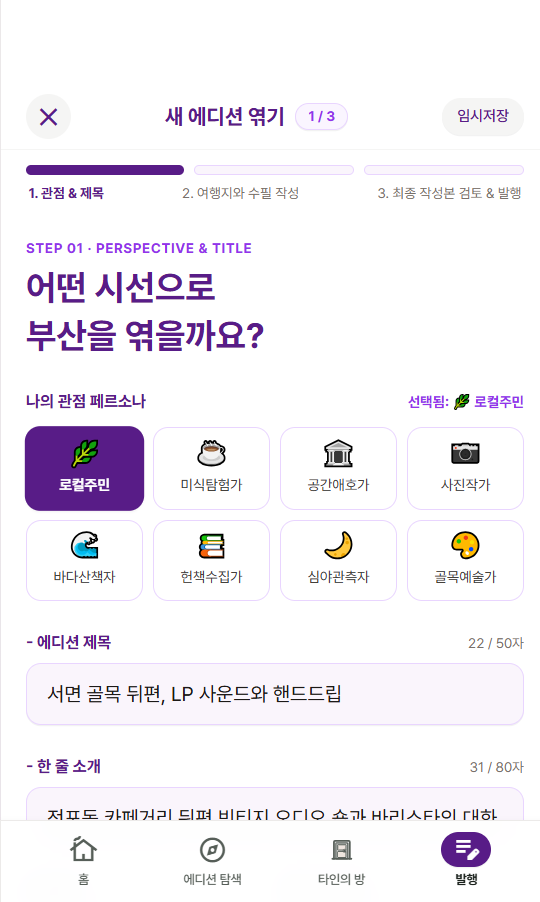

타인의 방
도시에서 발견한 문장과 사유 메모를 읽는 열린 기록 공간. 장소 태그로 탐색하고, 마음에 남은 구절에 댓글로 이야기를 보탭니다.
CITY HEART × LOCAL ART
LOC.TORIAL · 록토리얼같은 골목도 누구의 눈으로 보느냐에 따라 다른 이야기가 됩니다. 역사적 인물, 로컬 에디터, 아티스트의 시선으로 부산을 읽고 걸어보세요.
LOC.TORIAL 방문 새 창
역사 속 인물의 해석, 토박이의 일상, 공간을 읽는 예술가의 감각.
창을 바꾸면 추천 에디션과 도시를 해석하는 관점이 함께 달라집니다.
첫 번째 창 · HISTORY
역사적 인물의 AI 페르소나를 통해 장소의 기억을 새롭게 해석합니다. 산복도로의 계단과 부산항을 시간과 공간이라는 관점으로 읽습니다.
역사 인물의 실제 기록이나 발언이 아닌, AI 페르소나를 활용한 에디토리얼 해석입니다.


에디션은 장소 목록이 아니라 관점이 담긴 수필입니다. 제목과 한 줄 소개, 에디터의 프로필을 읽고 그 사람이 바라본 도시 속으로 들어갑니다.
아인슈타인이 바라본
산복도로의 굽어진 시공간
첨부된 VOL. 05는 가파른 168계단과 부산항을 시간의 지연과 중력이라는 은유로 풀어냅니다. 읽은 이야기는 ‘이 에디션 코스로 출발하기’로 이어집니다.
AI 페르소나 기반 창작적 해석 · 역사적 사실을 증명하는 기록은 아닙니다.
초량 168계단, 흰여울문화마을, 자갈치, 보수동 책방골목. 장소를 선택하고 역사·에디터·아티스트의 해석을 오가며 도시를 읽습니다.

다른 사람의 기록을 읽고 대화를 나누거나,
내 관점으로 새로운 에디션을 엮을 수 있습니다.

도시에서 발견한 문장과 사유 메모를 읽는 열린 기록 공간. 장소 태그로 탐색하고, 마음에 남은 구절에 댓글로 이야기를 보탭니다.

로컬주민·미식탐험가·사진작가 등 자신의 관점을 선택합니다. 제목과 소개를 쓰고, 여행지와 수필을 엮어 검토한 뒤 발행합니다.
관점 & 제목 → 여행지 & 수필 → 검토 & 발행CITY HEART × LOCAL ART